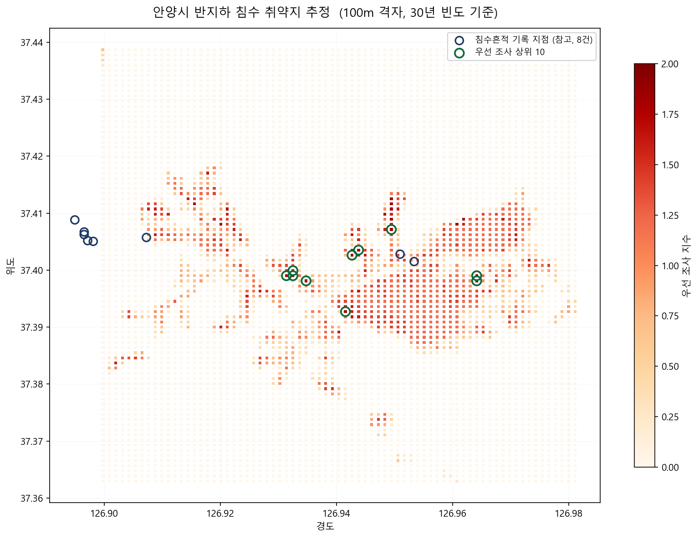

1. 한눈에 보기
분석 격자
—
100m × 100m
침수 예상 구역 포함
—
—
깊은 침수 예상 (N332 이상)
—
60cm 이상 구간
최우선 조사 구역
—
—
공식 침수흔적 기록
8건
전부 2022년 8월 · 내수침수 7건
2. 침수 예상 등급 분포
N330 얕음 (20cm)N331 중간 (40cm)
N332 깊음 (60cm)N333 매우 깊음 (100cm)N334 가장 깊음 (150cm)
괄호 안은 등급별 대표 침수심입니다. 등급 원본에는 cm 값이 없어 구간 하한을 택해 보수적으로 환산했습니다. 반지하는 20cm만 차도 현관 턱을 넘습니다.
3. 우선 조사 구역 상위 10
| # | 격자 | 등급 | 대표침수심 | 침수면적비 | 지수 |
|---|
지수 = 정규화(등급) + 정규화(침수면적비). 임의 가중치 없음. 세대밀도 결합 시 순위가 세분화됩니다.
4. 취약지 히트맵

파란 원: 침수흔적 기록 지점(8건, 참고) · 초록 원: 우선 조사 상위 10
5. 침수흔적도 기록 (공식)
| # | 구 | 연도 | 재해 | 원인 | 침수심 | 면적(m²) |
|---|
출처: 재난안전데이터공유플랫폼 DSSP-IF-00117. 침수흔적도는 피해자 신고 기반이라 실제 피해보다 과소 기록됩니다. 2022년 8월 충훈부 일대가 실제 침수됐음에도 안양시 전역 기록은 8건뿐입니다 — 이것이 가구 단위 진단이 필요한 이유입니다.
6. 지원사업 매칭 — 현행 지원과 공백
창문 차수막지표 유입 (창문)
안양시 지원
안양시 지원
배수 펌프유입 후 배출
안양시 지원
안양시 지원
현관 물막이판지표 유입 (현관)
미지원 — 단일 설비로 효과 최대
미지원 — 단일 설비로 효과 최대
역류방지밸브내부 역류
미지원 — 물막이판으로 대체 불가
미지원 — 물막이판으로 대체 불가
비교: 서울 강동구는 「반지하주택 전수조사 시행계획(2023)」에서 차수판·역지변(역류방지밸브)·차양시설까지 지원 품목으로 명시. 안양시는 창문 차단과 사후 배수에 집중되어 있어 현관 차단과 역류 차단이 공백입니다. 본 서비스가 축적하는 가구별 진단 데이터는 이 공백에 해당하는 가구를 식별해 지원사업 확대의 근거가 됩니다.
7. 향후 이 화면에 들어올 것
| 항목 | 설명 | 전제 |
|---|---|---|
| 동별 진단 가구 수 | 거주자가 동의한 진단 결과를 행정동 단위로 집계 | Firestore 연동 |
| 지표 유입 / 역류 대비 미흡 비율 | 두 경로별 대비 상태 분포. 지원사업 유형별 수요 산정 | Firestore 연동 |
| 우선 지원 가구 목록 | 예상 유입 깊이 내림차순. 동주민센터 방문 순서 | Firestore 연동 |
| 세대밀도 결합 우선순위 | 행정동별 인구·세대현황으로 반지하 존재 추정 반영 | 안양시 CSV 1종 |